전부 다 써보려고 했는데 1000m 이상 수도가 30개나 되는 바람에 일부만 간추려서 올리겠음
도시 내에서도 고도가 제각각이기 때문에 대략 중간 지점을 표준으로 정함
26등
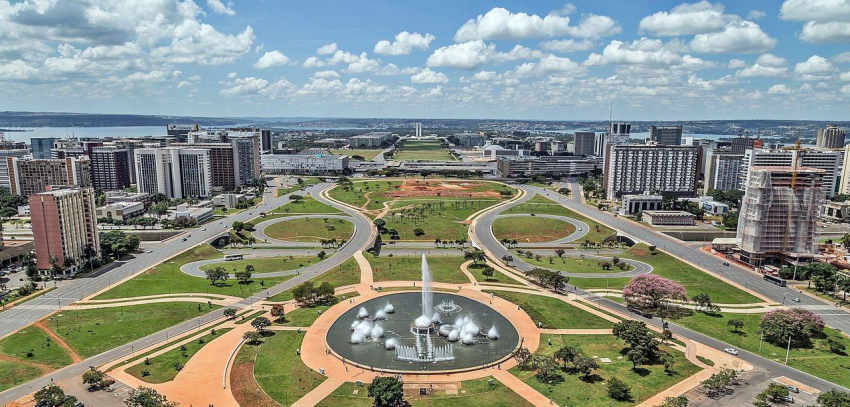
브라질 브라질리아
약 1100m
최대도시 상파울루도 해발 750~800m로 은근 높은 편
24등
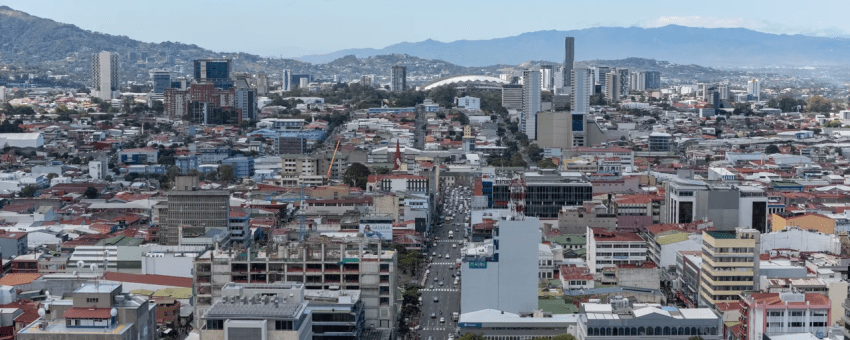
코스타리카 산호세
약 1150m
중앙아메리카도 산맥이 길게 이어져 있으며, 앞으로도 더 나올 거다
20등
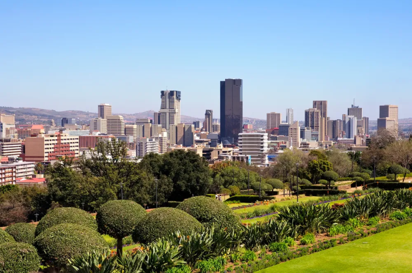
남아프리카공화국 프리토리아
약 1270m
남아공 최대도시인 요하네스버그는 여기보다 더 높은 1700m에 있다! 또한 사하라 이남 아프리카는 해안 지역 빼면 대체로 고도가 높은 편이다
18등
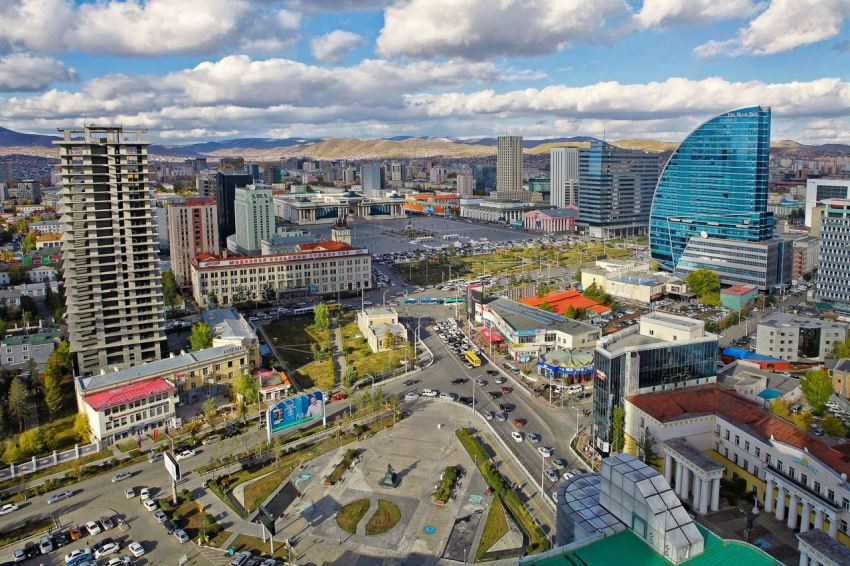
몽골 울란바타르
약 1350m
위도도 높고 고도도 높고 대륙 한복판에 있으니 존나 추운 이유가 있다. 지금 이미 영하를 찍고 있다!
17등
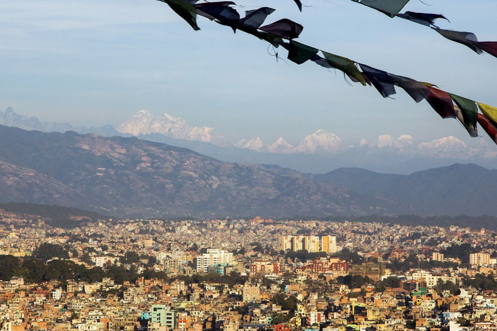
네팔 카트만두
약 1400m
그래봤자 에베레스트 산의 1/6. 히말라야 아래로 내려가면 고도 100m밖에 안되는 지역도 있다
15등
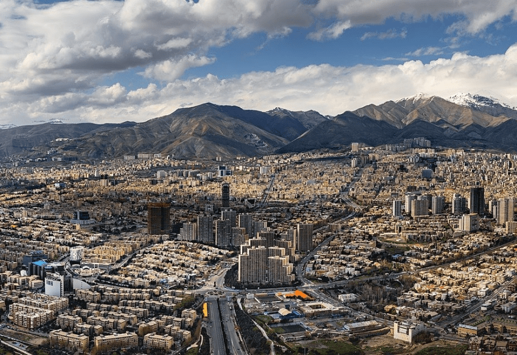
이란 테헤란
약 1400m
미국이 전쟁에서 고전하는 이유. 그리고 한국이 이란 축구 원정에서 고전하는 이유. 이란 대부분이 대체로 높은 편이다
14등
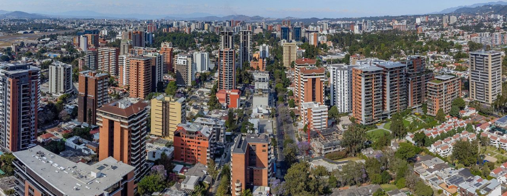
과테말라 과테말라시티
약 1520m
13등
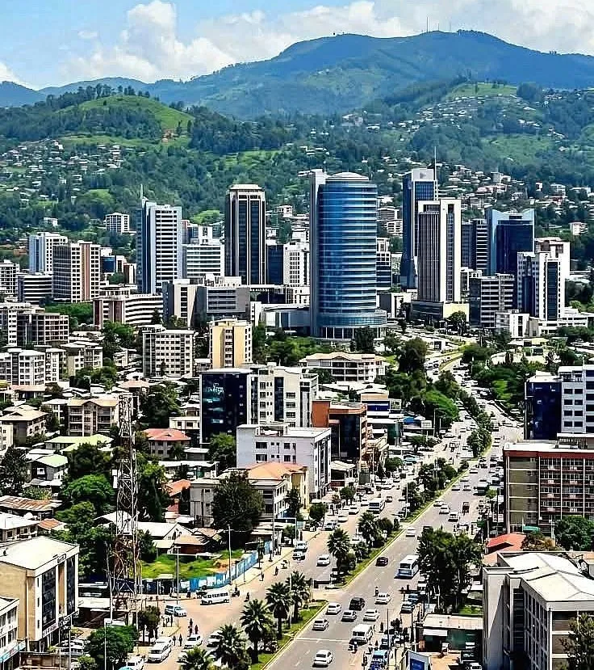
르완다 키갈리
약 1560m
카가메의 개발독재 하에 계속 발전하고 있다고 해도 인당 국민소득 1000달러를 겨우 넘겼을 뿐이다
12등
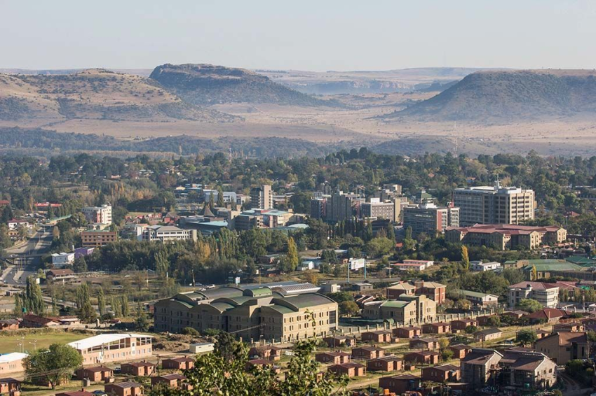
레소토 마세루
약 1670m
레소토의 평균 해발고도는 무려 2160미터로, 가장 낮은 지점이 1400m나 된다! 겨울에 눈이 내리는 극히 드문 아프리카 국가
11등
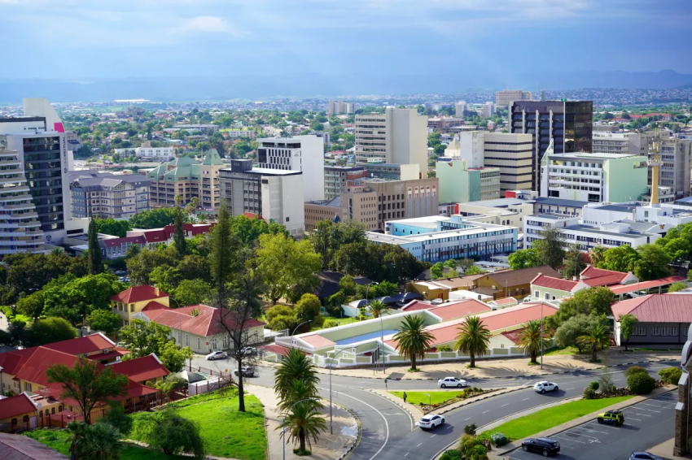
나미비아 빈트후크
역 1720m
10등
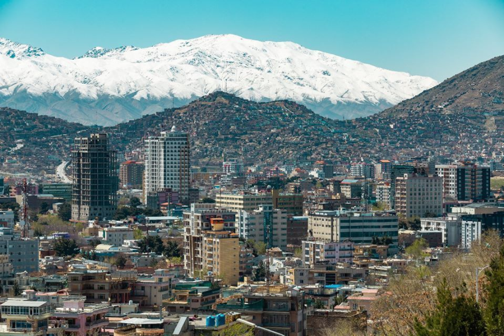
아프가니스탄 카불
약 1790m
아프간이 제국의 무덤인 이유. 저런 막장 국가에 사람도 500만이나 살고 있다!
9등
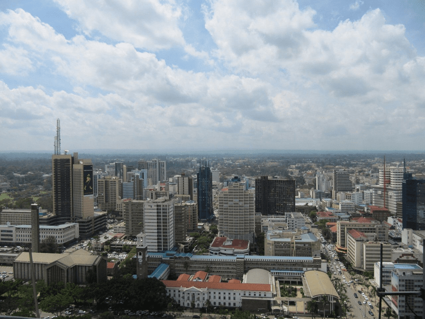
케냐 나이로비
약 1800m
남위 1도에 있지만 고산 기후라서 나름 시원한 편
8등
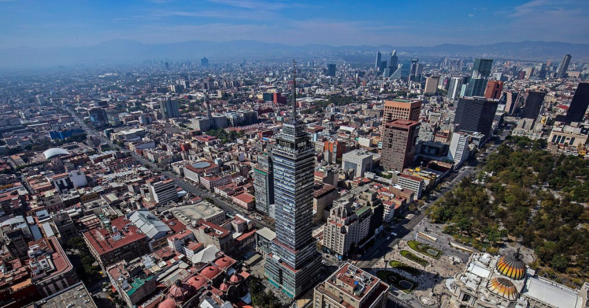
멕시코 멕시코시티
약 2240m
여기 나온 도시 중 가장 인구가 많다. 광역권으론 2000만을 넘어간다! 이런 데서 축구하는 멕시코를 이긴 잉글랜드
7등
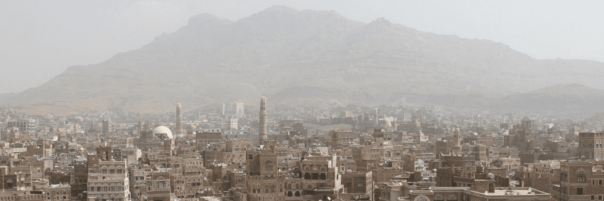
예멘 사나
약 2260m
예멘도 정말 답이 없다. 북위 15도에 있지만 연평균 기온이 20도가 안됨
6등
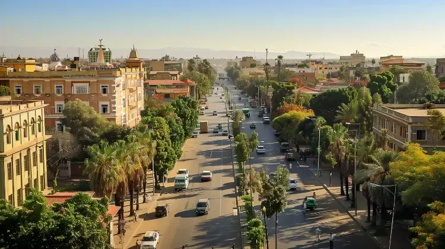
에리트레아 아스마라
약 2325m
아프리카의 북한이라는 별명이 있을 만큼 폐쇄적인 독재국가. 국가의 독립 영웅이 대통령이 되니까 30년 넘게 독재하고 있다
5등
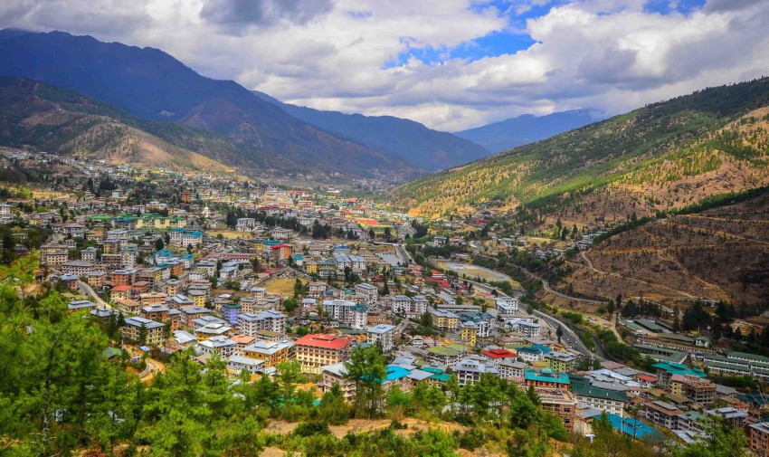
부탄 팀푸
약 2335m
상당히 험준한 지형이라 나름 폐쇄성이 강한 나라다. 유엔 상임이사국 5개국과 모두 수교하지 않은 나라이며 마음대로 관광하는 것도 힘들다고 함
4등
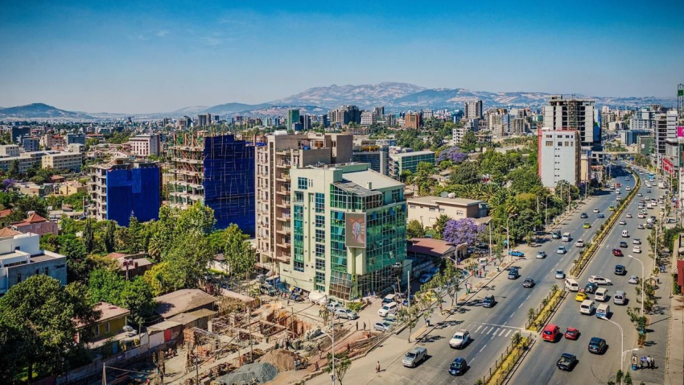
에티오피아 아디스아바바
약 2380m
동아프리카 지구대의 영향인 걸까? 여기 주변은 유난히 고도가 높은 것 같다
3등
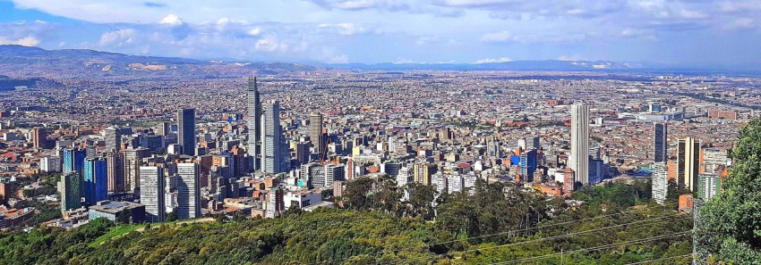
콜롬비아 보고타
약 2625m
드디어 끝판왕 안데스 산맥이 나온다. 북위 4도에 있는데 연평균 기온이 14도밖에 안됨. 이래서 고산 지대에 사는 거다
2등
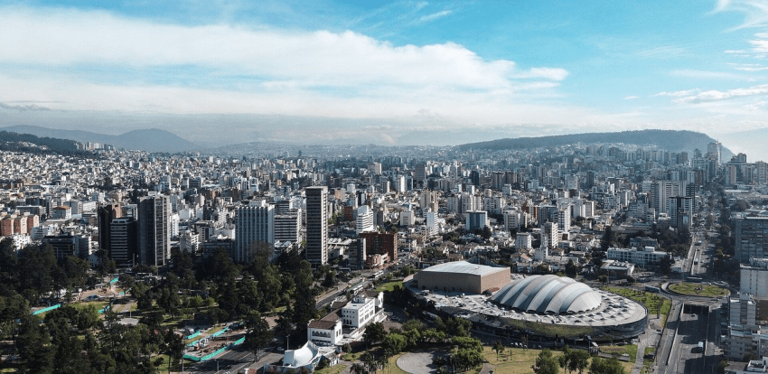
에콰도르 키토
약 2850m
이름 자체가 적도인 만큼 적도가 도시를 관통하지만 연평균 기온은 15도에 불과하다
그리고 대망의 1등
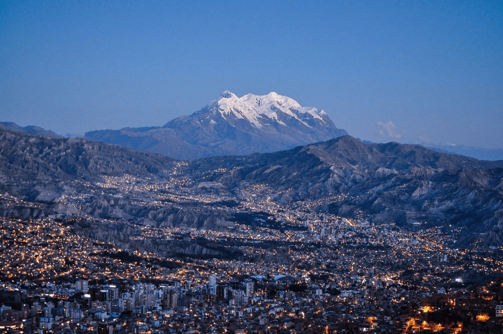
볼리비아 라파스
약 3640m
도시 자체가 고산병. 막강한 고도 덕분에 볼리비아 축구 국가대표팀은 홈 경기에선 무패. 라파스 도심은 이정도밖에 안되지만 옆에 있는 위성도시 엘알토는 4000m를 넘어간다!!! 국제공항도 여기 있고 요즘은 볼리비아 축구대표팀 경기도 해발 4090m에 있는 엘알토 경기장에서 한다고 한다. 그런데도 본선 진출을 못하는 게 볼리비아의 진정한 실력. 대체 저기서 어떻게 살아있는 건지 신기함. 물론 볼리비아도 산맥 내려가서 있는 최대도시 산타크루스는 400m 정도밖에 안됨
만약 티베트가 독립했을 경우 티베트 최대도시 라싸의 고도가 약 3660m로 위치에 따라 라파스를 제칠 수 있다
그럼 세계에서 가장 낮은 곳에 있는 수도도 알아보자
바다에 인접한 도시는 해발 0m인 곳들이 많아서 해수면보다 낮은 곳으로 가 보겠음
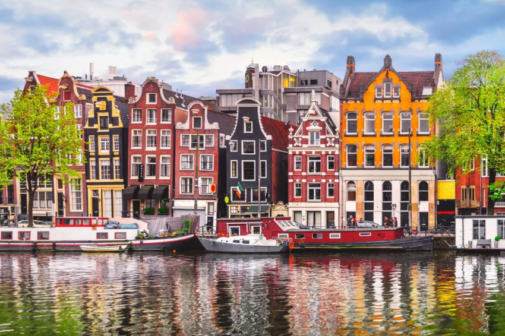
네덜란드 암스테르담
약 -2m
네덜란드 이름 자체가 낮은 땅이라는 뜻. 국토 1/4이 해수면보다 낮기 때문에 운하가 많고 적극적으로 간척을 하고 있다. 여기서 암스테르담의 고도는 평균 고도가 아니라 가장 낮은 위치를 기준으로 했음
근데 암스테르담보다 더 낮은 곳이 있다
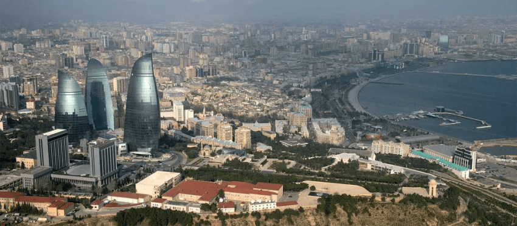
아제르바이잔 바쿠
약 -28m
카스피해에 면한 도시인데 가장 카스피해와 가까운 지점이 저 정도까지 낮아진다고 한다
서울은 몇 미터냐고? 기껏해야 10~50m
한국은 산이 그렇게나 많으면서 대부분의 도시는 100m 미만에 있다
댓글
수집 당시 댓글 38개
ㅇㅇ · 11.15 14:48:51
ㅇㅇ1 · 11.15 14:50:36
楚覇王 項羽 · 11.19 01:06:00
· ㅇㅇ · 11.19 01:24:12
· 楚覇王 項羽 · 11.19 04:24:03
주소킹 · 11.19 01:22:30
ㅇㅇ · 11.19 01:24:17
ㅇㅇ · 11.19 01:24:41
ㅁㄴㅇㄹ · 11.19 01:35:30
ㅇㅇ · 11.19 01:37:40
ㅇㅇ · 11.19 01:43:14
msnr · 11.19 01:51:51
ㅇㅇ · 11.19 01:58:01
ㅇㅇ · 11.19 02:05:15
· ㅇㅇ · 11.19 02:06:03
· 도떼녀 · 11.19 03:04:31
ㅂㅈㄷㄱ · 11.19 02:09:49
ㅇㅇ · 11.19 02:12:32
ㅁㅁ · 11.19 02:18:07
도떼녀 · 11.19 03:02:43
ㅇㅇ · 11.19 03:03:45
ㅇㅇ · 11.19 04:10:24
ㅇㅇ · 11.19 04:46:45
ㅇㅇ · 11.19 04:52:07
ㅇㅇ · 11.19 05:10:31
ㅇㅇ · 11.19 05:42:32
ㅇㅇ · 11.19 05:46:58
ㅇㅇ · 11.19 06:16:29
ㅇㅇ · 11.19 06:37:23
ㅇㅇ · 11.19 08:38:55
ㅇㅇ · 11.19 08:53:20
주갤럼 · 11.19 09:02:59
원또 · 11.19 09:23:10
ㅇㅇ · 11.19 11:33:36
더블알발음은아르르 · 11.19 11:37:34
ㅇㅇ · 11.19 11:42:37
ㅇㅇ · 11.19 12:09:13
· ㅇㅇ · 11.19 12:11:49